― これまでのイベント（記録） ―
| 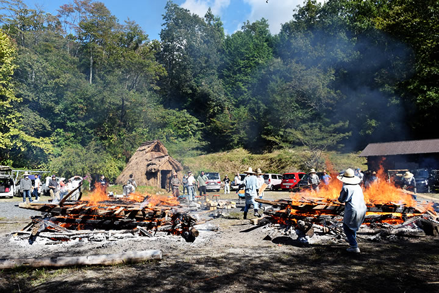 |
| （画像をクリックで拡大します） |
第25回秋の縄文野焼き祭り ～大地の子宮、すべての生命が宿るところへ～ が開催されました。
今回はとくに、１年がかりで進めてきた縄文式竪穴住居が完成し、そのお披露目と完成祝いを兼ねての祭り
となりました。
広場にはまさしく太古から存在したかのような、厚く茅をまとったうずくまる大きなマンモスのような竪穴住居
『大地の気場庵』が皆の到着を迎えます。
日本列島で１万４千年間も続いた縄文時代。
大きな争いや戦争も無かったという研究も発表されています。
その長い間に育まれた豊かな精神文化が縄文の造形美を花開かせました。
大自然の生命の豊饒と循環を祈り、魂が躍動するたくさんの生命の文様を施した、生命を抱く子宮である
縄文土器。
竪穴住居もまた、生命を抱き育む母なる大地の子宮として存在していました。
『大地の気場庵』完成によって、大地と心をつなぐ縄文スピリットの核となる場ができあがりました。
=∴=∵=∴=∵=∴=∵=∴=∵=∴=∵=∴=∵=∴=∵=∴=∵=∴=∵=∴=∵=∴=∵=∴=∵=∴=∵=∴=
また昨年に続き、太古の縄文ロードでつながる米国先住民ホピ族との交流も再び実現。
再訪されたルービン・サウフキー氏とともに、今回初訪日となる息子のルービン・サウフキー・ジュニアも
参加いただき、はるばるホピのメッセージと魂を届けてくれました。
秋の縄文野焼き祭りでの交流を通して、ホピ×縄文のスピリットを皆で共有できました。
=∴=∵=∴=∵=∴=∵=∴=∵=∴=∵=∴=∵=∴=∵=∴=∵=∴=∵=∴=∵=∴=∵=∴=∵=∴=∵=∴=
7時頃に野炉に火入れし、早朝に駆けつけてくれたスタッフの方々とともにいよいよ祭りがスタートしました。
今回焼き上げるのは、陶芸教室生をはじめ、地元の井倉小学校の子供たちの作品など約150点。
「女たちの縄文野焼き」挑戦も4度目となります。
男性と女性それぞれのチームでひとつずつの野炉を受け持ちました。

|
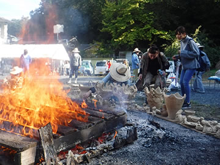 |

|

|
| 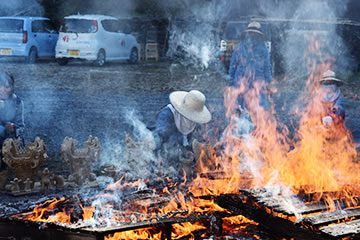 | 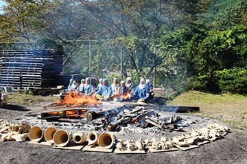 |
| （画像をクリックで拡大します） | |
ふたつの野炉の周りに作品を並べてのあぶり焼き。
女の野炉には、火焔式土器を中心に、柔らかな曲線の縄文土器や可愛らしい土偶鈴など。
また男の野炉には、緻密で細かな縄文文様の施された縄文土器や縄文ペッカリーや土面などが並びます。
作品は少しずつ火にあぶられて熱くなっていきます。
=∴=∵=∴=∵=∴=∵=∴=∵=∴=∵=∴=∵=∴=∵=∴=∵=∴=∵=∴=∵=∴=∵=∴=∵=∴=∵=∴=
| 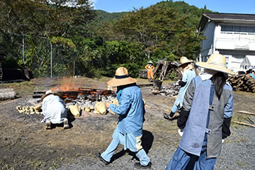 | 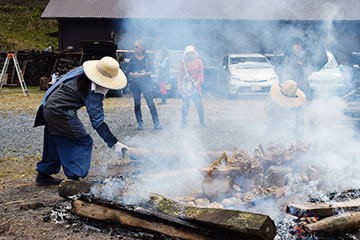 |
| 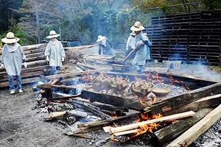 | 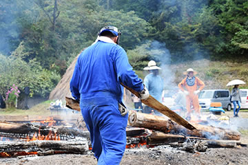 |
| 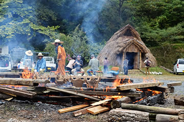 |

|
| （画像をクリックで拡大します） | |
野炉の真ん中に入れた作品を太い材木で囲んで焚き続け、徐々に火力と温度を上げていきます。
土器の色はしだいに土色から黒へ、黒からこげ茶へと刻々と変化。
=∴=∵=∴=∵=∴=∵=∴=∵=∴=∵=∴=∵=∴=∵=∴=∵=∴=∵=∴=∵=∴=∵=∴=∵=∴=∵=∴=

|

|
| 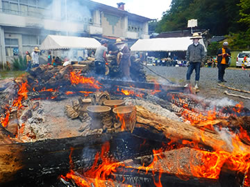 |

|
| 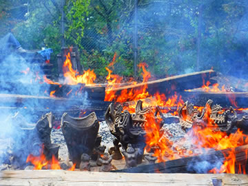 |

|
| （画像をクリックで拡大します） | |
太い材木を井桁に組み上げ、細い材木を間に差し入れながらさらに火力を上げてゆきます。
放射される炎の熱気の前で奮闘を続ける、炎に馴染んだ熟練の野焼きスタッフたち。
風の力・炎の力・太陽の力など自然の力が一体となって縄文野焼きが進行してゆきます。
=∴=∵=∴=∵=∴=∵=∴=∵=∴=∵=∴=∵=∴=∵=∴=∵=∴=∵=∴=∵=∴=∵=∴=∵=∴=∵=∴=
| 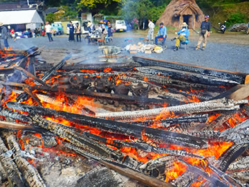 | 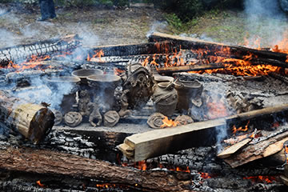 |
| 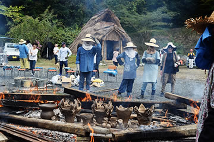 | 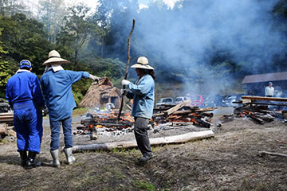 |
| （画像をクリックで拡大します） | |
そして、上まで全体を炎で覆う野焼きのクライマックス――火の子宮――へ。
完全に炎に包まれ、大きな火柱が大地から天へとたちのぼり、作品が火のパワーを受けた新たな生命として
生まれ出る瞬間を迎えました。

|

|
| 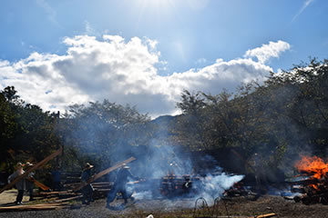 |

|

|
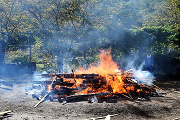 |
| 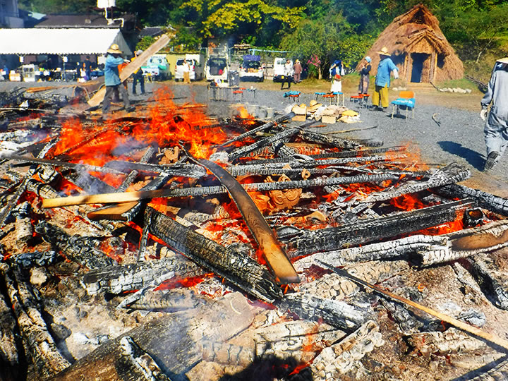 | |
| （画像をクリックで拡大します） | |
=∴=∵=∴=∵=∴=∵=∴=∵=∴=∵=∴=∵=∴=∵=∴=∵=∴=∵=∴=∵=∴=∵=∴=∵=∴=∵=∴=
今回の野焼きでは、岡山・倉敷・総社・矢掛町など岡山県内はもちろん、遠く東京や千葉、大阪、兵庫、
広島、愛媛、徳島などから250人以上参加してくれました。
「縄文」の文化芸術が現代においてこれまでになく注目を受け、皆に好奇心と関心を抱かせていることを実感
します。
| 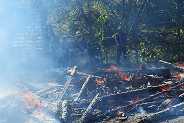 |

|
| 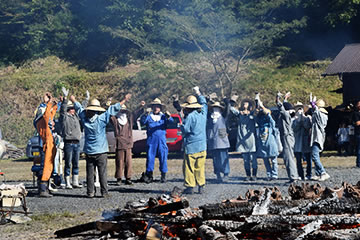 |

|

|
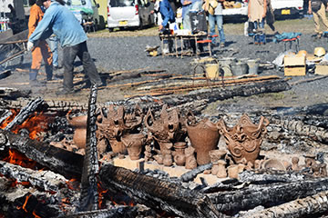 |
| （画像をクリックで拡大します） | |
たくさんの関心は、これまでの美術館の活動の中で発信してきた成果であるとともに、縄文造形の素晴らしさ
や縄文ピリットの中に、いま地球規模に広がっている現代の命の問題を乗り越える知恵と心を感じ取り、学びたい
と思う人たちの心の表れではないでしょうか。
土をこね、縄文の文様で命や魂の躍動を表現し、竪穴住居の炉の火を囲み、生命の循環や大地とのつながりを
実感できる場としてここが機能してゆけば嬉しいと思います。
| 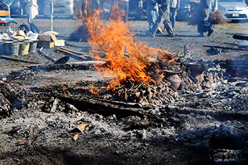 | 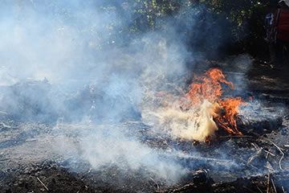 |
| 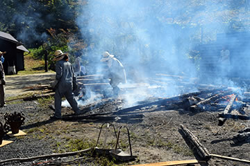 |

|
| 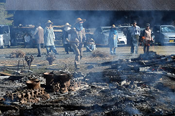 | 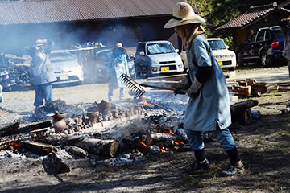 |
| （画像をクリックで拡大します） | |
=∴=∵=∴=∵=∴=∵=∴=∵=∴=∵=∴=∵=∴=∵=∴=∵=∴=∵=∴=∵=∴=∵=∴=∵=∴=∵=∴=
《縄文野焼き大賞》
縄文野焼き大賞など4賞が選ばれました！
焼き上がった作品はどれも縄文の心があふれるとても素晴らしいものばかりです。
その中からとくに独創性・縄文造形の光る作品を対象に「縄文野焼き大賞」など4賞を選考し表彰いたしました。
受賞作は12月から当館に展示いたします。
●受賞者（敬称略）
◆縄文野焼き大賞 ………………… 中山裕那（岡山市） 縄文土器
◆新見市教育委員会教育長賞 …… 西田悠城（井倉小５年） 縄文ペッカリー
◆法曽焼同好会会長賞 …………… 北村ますみ（広島県福山市） 創作縄文土器
◆猪風来美術館館長賞 …………… 堀尾恵（熊本県宇城市） 創作縄文土器
| 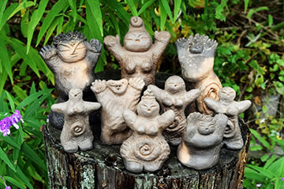 |

|
| 【縄文野焼き大賞】 | 【新見市教育委員会教育長賞】 |
| 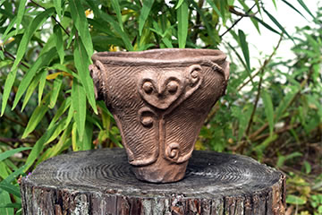 |

|
| 【法曽焼同好会会長賞】 | 【猪風来美術館館長賞】 |
| （画像をクリックで拡大します） | |
=∴=∵=∴=∵=∴=∵=∴=∵=∴=∵=∴=∵=∴=∵=∴=∵=∴=∵=∴=∵=∴=∵=∴=∵=∴=∵=∴=
《縄文体験コーナー》
～縄文土器で煮炊きをしてみよう！～
縄文土器で煮炊きをしよう！
土の上に2個の土器を置いて、その周りに薪をくべて鍋が十分に温まったら水を入れます。
今日の煮炊きは野菜やキノコたっぷりの猪汁。
土器大好きな女性たちが手伝ってくれて、みごとな野性味あふれる土器汁ができあがりました。
無料で振る舞われる土器汁を、みな興味深々に味わっていました。

|

|
| （画像をクリックで拡大します） | |
～粘土でつくろう～
今回はとても凝った作品を制作した方が多数おりました。
縄文的であり現代アート的でもあり、縄目文様がマジカルな作品たち。
これらの作品は、11月初めに焼き上げる予定です。
～粘石で勾玉をつくろう～
白・黒・ピンクのやわらかな滑石を削って勾玉の形に。
大人も子供も、年代に関係なくひたすら夢中に取り組んで、命の豊饒を祈って作ります。

|

|
| （画像をクリックで拡大します） | |
=∴=∵=∴=∵=∴=∵=∴=∵=∴=∵=∴=∵=∴=∵=∴=∵=∴=∵=∴=∵=∴=∵=∴=∵=∴=∵=∴=
《販売コーナー》
地元法曽焼同好会による販売コーナーでは、うどんや猪カレーうどん、猪カレーライス、大山おこわなどが
提供されました。
飲み物や地元特産品法曽茶・法曽焼、ピオーネの販売もありました。

|

|
| （画像をクリックで拡大します） | |
=∴=∵=∴=∵=∴=∵=∴=∵=∴=∵=∴=∵=∴=∵=∴=∵=∴=∵=∴=∵=∴=∵=∴=∵=∴=∵=∴=
縄文式竪穴住居『大地の気場庵』完成を祝って、餅まきが賑やかに行われました。
竪穴住居の前で紅白餅やお菓子が撒かれ宙を舞います。
昨年秋より作業を進め、茅集めや材木切り出し、皮むき、土盛り、柱建て、茅葺きと、延べ約235人の協力
を得て完成にこぎつけました。
皆への感謝を込めて、新たな縄文スピリットの拠点として親しまれるように、にぎやかに行われました。

|

|
| （画像をクリックで拡大します） | |
=∴=∵=∴=∵=∴=∵=∴=∵=∴=∵=∴=∵=∴=∵=∴=∵=∴=∵=∴=∵=∴=∵=∴=∵=∴=∵=∴=
《米国先住民ホピ族 ルービン・サフフキー氏の再訪と、子息サフフキー・ジュニアの初来日》
～縄文野焼きの炎と縄文式竪穴住居とウォリアーダンス～
ホピ族には、地下深くに母なる大地とつながる大切な場所『キバ』があり、そこで集会やお祈りが行われます。
縄文と基底で繋がる彼らに、同じく大地に根ざした竪穴住居『大地の気場庵』完成を祝うホピ・セレモニーを
していただきました。
気場庵の中でホピ式の祈りを捧げた後、ホピの魂の込められた水晶がルービンから猪風来に渡され、気場庵に
納められることになりました。
そしてウォリアーダンスが始まりました。
母なる地球を守る精霊の姿に扮したジュニアがルービンの太鼓とホピの歌声に合わせて舞います。
両手に弓矢と楽器をもち、大地を力強くリズミカルに踏みしめ、時々発せられるかけ声が青空に突き抜けて
いきます。
ネイティブアメリカンの物語にある「大地が病み動物たちが消え始めたときに皆を救うために現れる虹の戦士」
の話を思い出します。
縄文野焼きの炎の前で縄文とホピの魂が交わった瞬間でした。
また会場では、ホピの伝統的な銀細工師であるルービン氏の作品や工芸品の展示・販売も行われました。
| 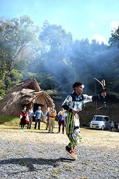 | |
| （画像をクリックで拡大します） | |
=∴=∵=∴=∵=∴=∵=∴=∵=∴=∵=∴=∵=∴=∵=∴=∵=∴=∵=∴=∵=∴=∵=∴=∵=∴=∵=∴=
～大地に感謝の祈りを――広場にラウンド・ダンスの大きな輪がひろがる～
昨年も行われたホピのラウンド・ダンスがルービン氏とジュニアの指導で行われました。
ホピの太鼓に合わせて、野焼きスタッフ、裏方スタッフそして各地からの参加者が輪になって大地を踏みしめるステップを踏みます。
私たちが大地と繋がっているという意味、またあらゆるものが調和し良きほうに事が変わっていくようにという意味だそうです。
またジュニアを先頭に前の人の肩に両手をかけてつながって縦横に走る道化の踊りも。
ジュニアの緩急をつけたリズムに合わせて追いかけあい、皆息を切らしながらも笑顔が弾けていました。
| 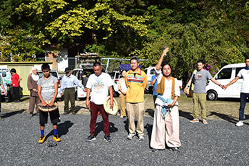 |

|
| 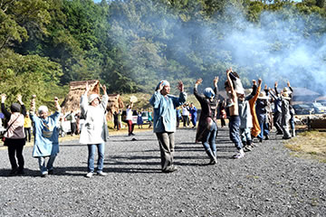 |

|
| （画像をクリックで拡大します） | |
=∴=∵=∴=∵=∴=∵=∴=∵=∴=∵=∴=∵=∴=∵=∴=∵=∴=∵=∴=∵=∴=∵=∴=∵=∴=∵=∴=
《ルービン・サウフキー×猪風来の対談式講演会》
縄文野焼き祭りを終えた後、昼の熱気と感動の余韻が漂うなか、猪風来美術館第５展示室で対談が始まりました。
第５展示室には猪風来の沖縄シリーズ「黒潮の海」「女の祭」「縄文の太陽」「縄文の月」奥に「大地の女神」
「月の女神」の作品が展示してあり、参加者はその間に輪になって座りました。
昨年の講演会では ホピと縄文が根源で深く通底していることが実感できる素晴らしい場となりました。
猪風来はホピ族のキバ（地下式の祈祷所）が縄文の竪穴住居ととても似た構造をもつ「大地の子宮」の思考
であること、縄文土器がもつ女性原理の精神世界について語りました。
ルービン氏は ホピ族は今でも母系社会であり命を産み出す女性が大切にされていること、ホピとは生き方の
ことであり、母なる大地の上ですべての存在と調和し生命の輪の中でつながっていることが重要であることを
述べました。
今回はこの内容をさらに深めることから始まりました。
ホピの母系社会・女性性についての疑問に答えて、ルービン氏は家族の家長や子供の氏族、財産は女性に属し
ていること、女性だけの結社や祭りが存在すること、その祭りの様子はこの展示室内の沖縄の女の祭りの印象と
同じようだと述べました。
また、ホピが亡くなった人を葬るときは、縄文の屈葬と同じく、生まれてきた時と同じ姿に体を丸めて葬る
という話も。
「男女を問わず、内なる女性性をリスペクトし直す時が来たのではないかと思います」とのルービン氏の言葉は、
大地の上でつながるすべての生命の輪と人類の未来のためのキーワードではないでしょうか。
| 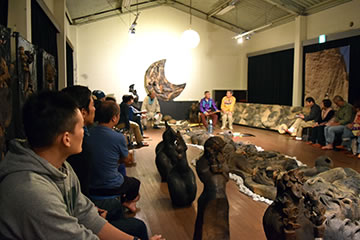 |

|
| （画像をクリックで拡大します） | |
後半はルービン氏に「ホピの予言の岩」の解説していただきました。
長いお話を簡潔に、そして大切なポイントをわかりやすく説明してくれました。
「人類が破滅の道を進むのか、生存し続けるか、その岐路に立ってどちらの道を進むべきか」という、今日において
非常に切実な問いかけ、かつ調和して生きるという精神的な生き方を提示する内容だったと思います。
最後にルービン氏から猪風来へ、地球を守る賢者マーサウのカチーナ・ドールを贈られました。
マーサウは予言の岩の物語で重要な役割を担う、火を扱う者です。
昨年に引き続いて尽力してくださったアナンダラバ事務局の佐々夫妻に深く感謝いたします。
| 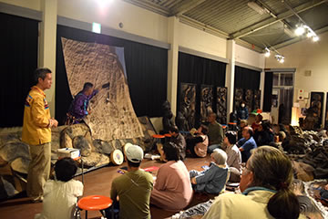 | 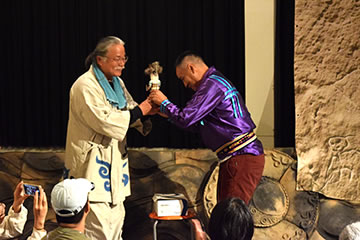 |
| （画像をクリックで拡大します） | |
=∴=∵=∴=∵=∴=∵=∴=∵=∴=∵=∴=∵=∴=∵=∴=∵=∴=∵=∴=∵=∴=∵=∴=∵=∴=∵=∴=

|
| 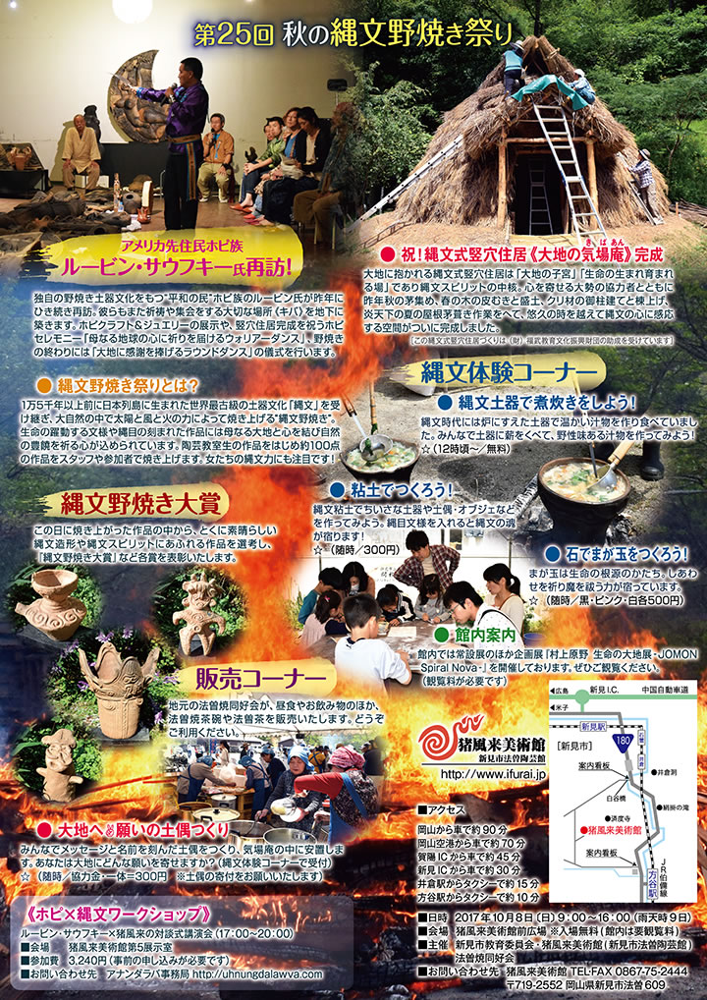 |
| 【「第25回 秋の縄文野焼き祭り」チラシ】 →PDF版を開く |